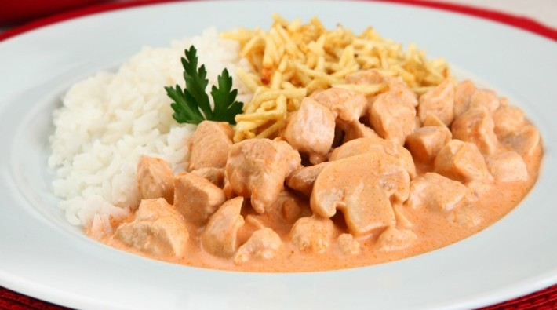

Estrogonofe de Frango
Receita Simples
INGREDIENTES
- 3 peitos de frango Seara cortados em cubinhos
- 1 dente de alho picado
- Sal e pimenta a gosto
- 1 cebola picada
- 2 colheres de sopa de maionese
- 1 colher de manteiga
- 1/2 copo de catchup
- 1/3 copo de mostarda
- 1 copo de cogumelos
- 1 copo de creme de leite
- Batata palha
MODO DE PREPARO
- Misture o frango Seara com alho, maionese, sal e pimenta
- Numa panela, aqueça a manteiga e adicione a cebola
- Deixe dourar e acrescente o frango até dourar também
- Adicione os cogumelos, o catchup e a mostarda
- Quando começar a ferver, acrescente o creme de leite e desligue o fogo
- Sirva com arroz branco e batata palha
VÍDIO DO PREPARIO
OUTRAS COMIDAS

© Copyright 2015 Que Coisa Ltda, todos os direitos reservados. Proibida a reprodução sem autorização.